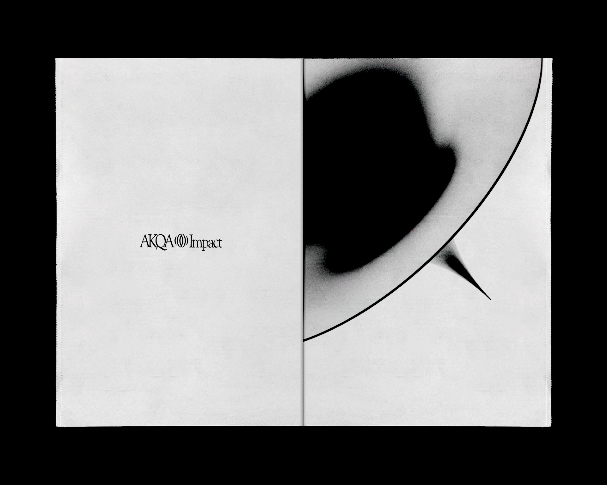
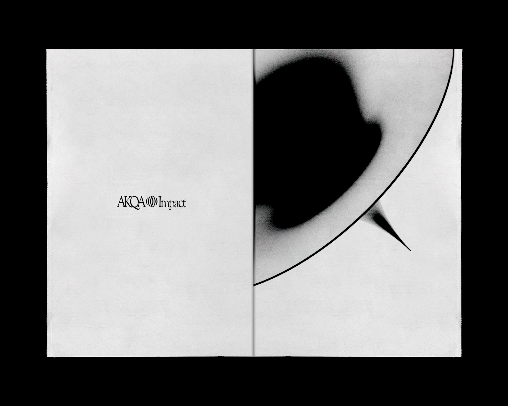
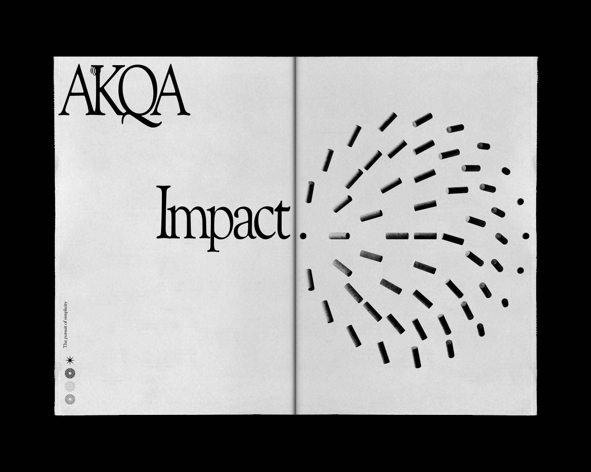
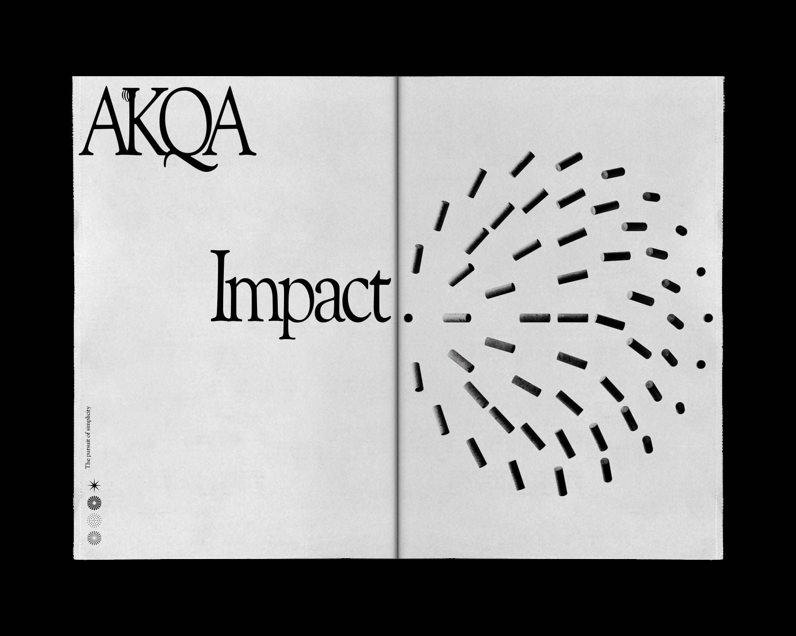

AKQA•Impact
AKQA Group it's one of the biggest groups on the planet of design and communication agencies. Among its many areas, exists AKQA Impact, a division dedicated to projects based on social impact and diversity for the internal team, partners, and brands, where they invest in initiatives and projects that have a social impact on society.
In 2021, I was invited to explore and create some visuals for the symbol and some scenes to represent the areas inside Impact: Projects, People, and Technology. The symbol concept ended up being an intersection of two ripples: a graphic visualization of the impact that AKQA programs have.
The Projects scene was imagined as a big library, where each book represents a project and its history. The People scene seeks to represent a space of conversation and exchange of experiences without differences. For last, the Tech space was conceptualized to portray technological tools in an uncommon form, as something futuristic and ethereal.
Client: AKQA•Impact
Year: 2021
Design & Art Direction: Guilherme Garófalo
3D Design: Bruno Faiotto
AKQA Team: Paula Santanna, Diego Machado, Christiano Velutti e Denisson Santos.


 



 
